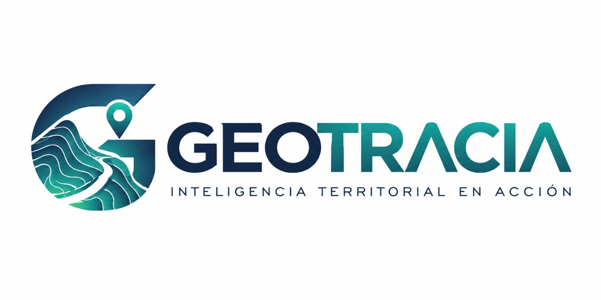
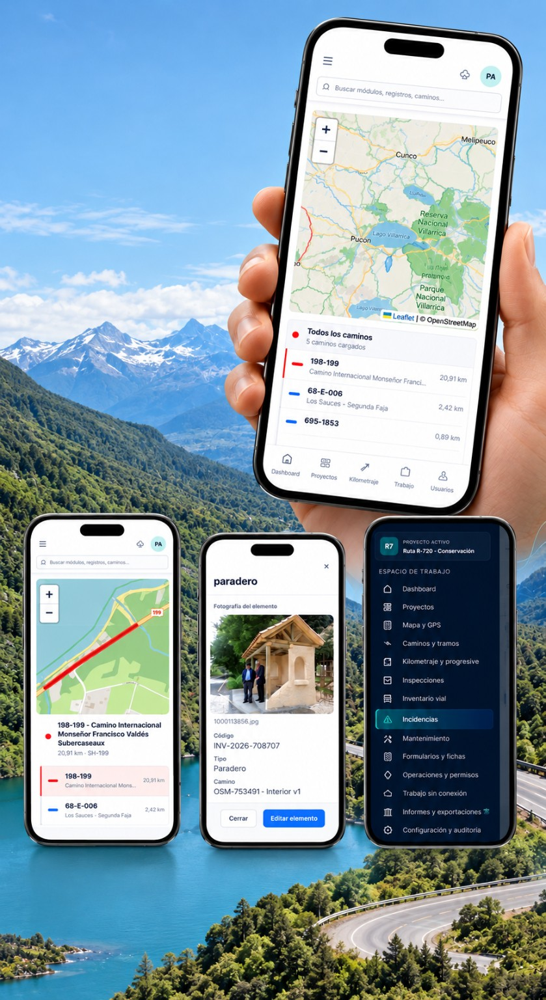
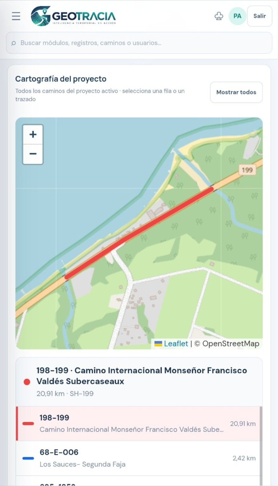
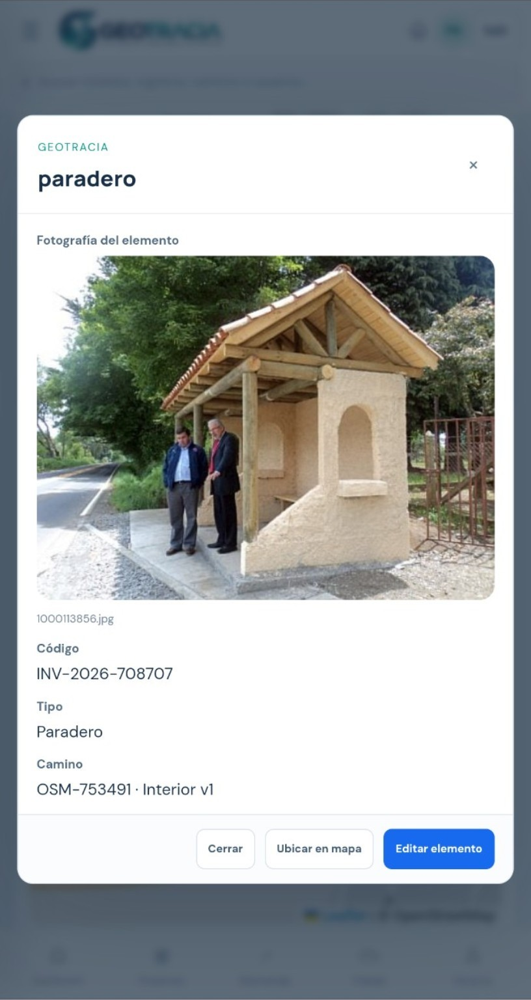
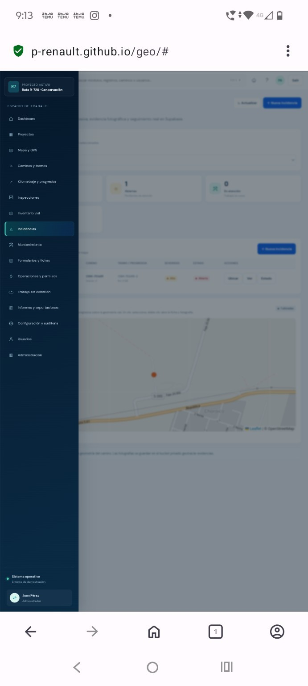

Captura en terreno
Registra información desde cualquier dispositivo.

TRANSFORMA DATOS EN DECISIONES
Una plataforma geoespacial para organizaciones que necesitan planificar, monitorear y gestionar su territorio con información confiable y actualizada.




TU TERRITORIO, EN UNA NUEVA DIMENSIÓN
Explora el territorio desde una plataforma pensada para equipos que necesitan entender qué ocurre, dónde ocurre y qué hacer después.
Registra información desde cualquier dispositivo.
Combina capas, proyectos y registros en un solo mapa.
Identifica riesgos, oportunidades y toma mejores decisiones.
Gestiona actividades y seguimiento en tiempo real.
Genera reportes con evidencia para equipos e instituciones.
TECNOLOGÍA CON CRITERIO
Acceso organizado a la información que tus equipos necesitan consultar.
Contexto y seguimiento para comprender el estado de los proyectos.
Una base de trabajo adaptable a distintas escalas y necesidades.
EL SIGUIENTE PASO COMIENZA AQUÍ
Conversemos sobre tus desafíos y descubre cómo GEOTRACIA puede ayudar a tu equipo a trabajar con más claridad, control y agilidad.
Solicitar una demostración ↗Sin compromiso · Una conversación enfocada en tus necesidadesDISEÑADA PARA EL TRABAJO REAL
GEOTRACIA conecta datos, personas y proyectos para que cada decisión tenga contexto y cada avance pueda seguirse.
Evalúa alternativas, integra antecedentes y fortalece estudios de factibilidad con una lectura territorial más completa.
Visualiza obras y restricciones, coordina equipos y supervisa el avance con información georreferenciada.
Apoya la planificación, la gestión de infraestructura y la priorización de iniciativas con evidencia territorial.